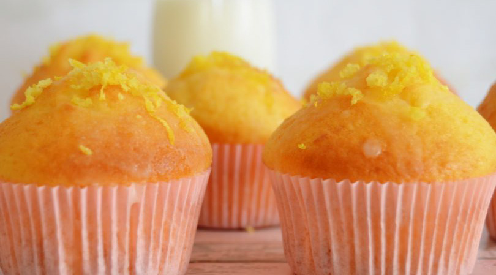

Böyle Limonlu Cupcakeler Daha Önce Görülmedi
Merhabalar hoşgeldiniz.. Youtube kanalıma abone olarak bana destek olursanız çok mutlu olurum ️ Sizlere fresh bir lezzetle geldim.
tadı görüntüsü muhteşem bir lezzet mutlaka kaydedin..
Tarif:
hepimizin_mutfagi
Kaç Kişilik : 4 Kişilik
Hazırlanma süresi: 30 dakika
Pişirme Süresi: 10 dakika
MALZEMELER
-
Keki için:
- 2 adet yumurta
- 1 su bardağından bir parmak eksik toz şeker
- 1 büyük çay bardağı süt
- Yarım çay bardağı sıvı yağ
- 2 su bardağı kadar un
- 2 yemek kaşığı limon suyu
- 1 paket kabartma tozu
- 1 limon kabuğu rendesi
- 1 çay kaşığı kadar sarı gıda boyası
Kreması için:
- 2 adet yumurta
- 1 su bardağından bir parmak eksik toz şeker
- 1 büyük çay bardağı süt
- Yarım çay bardağı sıvı yağ
- 2 su bardağı kadar un
- 2 yemek kaşığı limon suyu
- 1 paket kabartma tozu
- 1 limon kabuğu rendesi
- 1 çay kaşığı kadar sarı gıda boyası
HAZIRLANIŞI:
- İlk olarak oda ısısındaki sütün içerisine 2 yemek kaşığı limon suyunu ekleyip yarım saat bekletelim. ( butter milk yapıyoruz bı kekimizin daha yumuşak ve kadifemsi dokusunun olmasını sağlıyor.
- Yumurta ve şekeri 5 dakika çırpalım yağ, şeker sütü ekleyip karıştıralım.
- Un ve kabartma tozunu ekleyelim. Unu kontrollü ekleyelim kalan malzemeleri ekleyip çırpalım.
- Muffin kalıplarına dökelim toplamda 15 adet çıkıyor. Önceden ısıtılmış 160- 170 derecede çok kızartmadan pişirelim.
- Kek pişerken kremasını hazırlayalım. Limon kabuğu ve limon suyu hariç diğer malzemeleri karıştıralım ve ocağa alalım.
- Krema katılaşınca altını kapatalım ve limon suyu ve kabuğunu ekleyelim. (tam yağlı süt kullandığım için krema bey tereyağ kullanmadım.
- 1 tatlı kaşığı tereyağ veya yarım çay bardağı krema ekleyebilirsiniz) krema pişince arasa karıştıracaksın kabuk tutmasın üzeri soğuyunca üzerini kapatıp dolaba kaldıralım.
- Kek pişince üzerini bezle kapatıp en az 5 saat dinlendirelim. Hemen yaparsanız hamurlaşma yapabilir.
- Kekin içerini biber oyacağıyla çıkardım. Çıkardığımız parçaları robottan geçirelim.
- Kekin içerisine krema koyalım ve üzerine sürelim kek parçalarına bulayalım. 1-2 saat dolapta dinlendirelim.
Afiyet Olsun....❤️